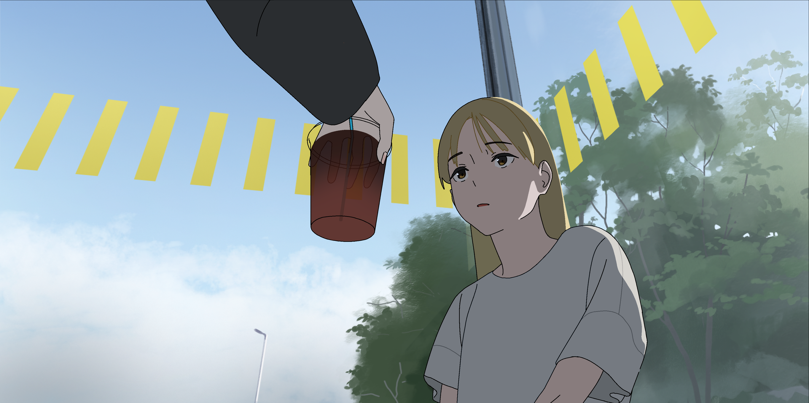
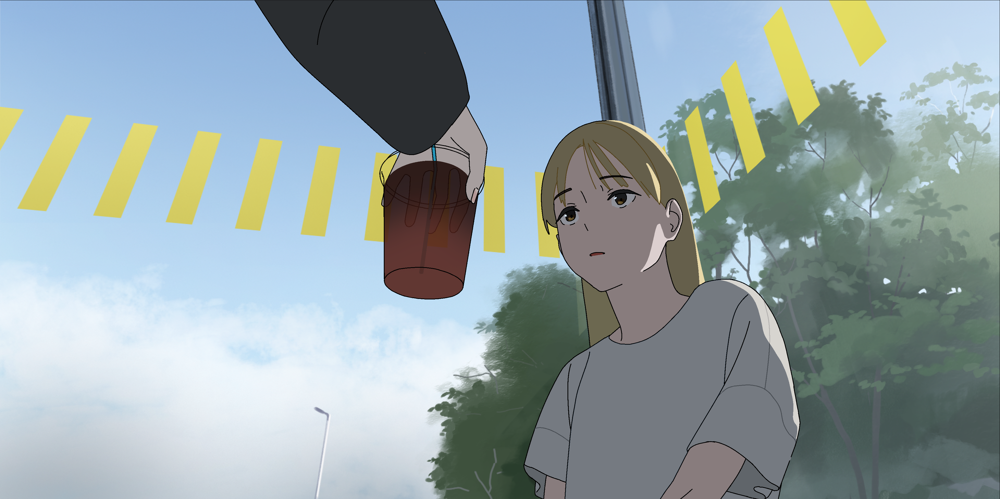
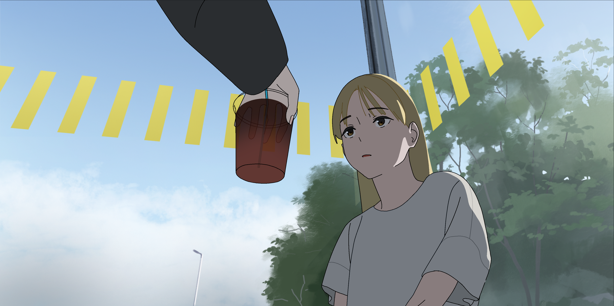

Kota Oebisu

 


このアニメーション作品は技術的な腕試しとして始まり、「一つの映像として時間と空間が違和感なく存在する環境とそこにいるキャラクターを立ち上げる」という目標が、実質的なコンセプトとなっている。
そのため、画面の美しさはもちろん、最低限の画面強度を担保しながら一人で作り切ることのできる尺のなかで、無駄なくストーリーと環境を伝える映像を組み立てるために、レイアウトから色使いまで、画面を構成するあらゆる要素に細心の注意をはらいながら演出を行なった。
音声においては、できるだけ効果音を追加することなく、足音以外は全てフィールドレコーディングに合わせるアプローチにより、空間性をより強調するように作られている。
制作を通じて得ることのできた技術的な達成と新しい課題はもちろん、ストーリーテリングにおけるモンタージュの面白さと純粋な驚き、一人でアニメーション作品を作ることの可能性とその限界など、映像表現へ抱く根本的な関心と実務的な課題が明確に幅が広がる形で見つけられた作品。
CLIPSTUDIOPAINT, Adobe Photosop, After Efects, Premiere Pro, Audition
All around you
2023
animation
